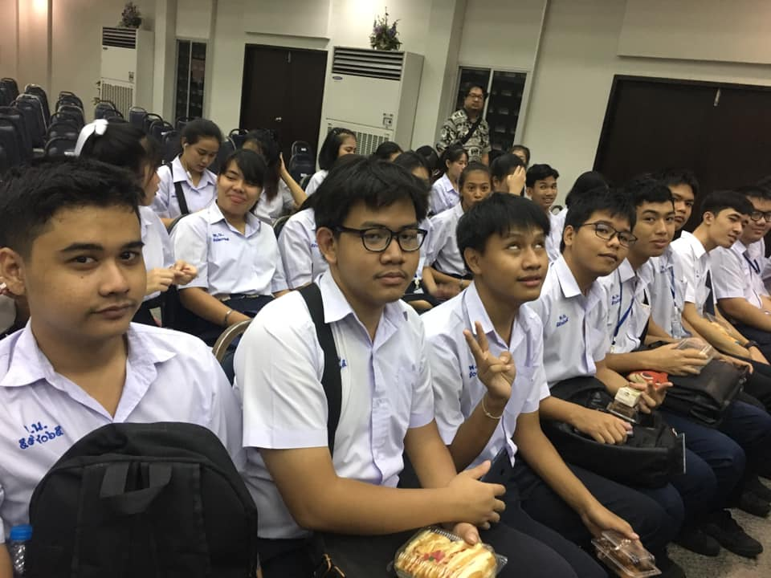

ธีรสุต เกษเจริญ
70/129 ม.พฤกษา47/2 ต.บางเมือง อ.เมือง จ.สมุทรปราการ 10270 · TEL(090-993-1068) ·
natds56144@gmail.com
ผมชื่อ นาย ธีรสุต เกษเจริญ ชื่อเล่น นัท เกิดวันที่ 28 พฤศจิกายน 2543 อายุ18ปี ช่องทางการติดต่อสามารถตามด้านล่าง
{kind=link}
ประสบการณ์
การฝึกงาน
apprentice
ฝึกงานที่ การประปานครหลวงสาขาพระโขนง แผนก สปน(ส่วนปฎิบัติการนํ้าสูญเสีย) ทํางานเกี่ยวกับจัดการเอกสารของพื้นที่นํ้าไม่ไหลหรือทําการตัดนํ้าเเล้วส่งข้อมูลผ่านเครื่องสแกนมาลงในโน้ตบุ๊คแล้วจัดนําข้อมูลส่งฐานข้อมูล.
มิถุนายน 2018 - สิงหาคม 2018
ประวัติการทํางาน
Work history
พนักงานPass-Time ที่บิ๊กซีอิมพีเรียลสําโรง แผนกDry-Food พนักงานจัดเรียงสินค้า
6เดือน
Work history
พนักงานPass-Time ที่ไบเทคบางนา ตําแหน่งเสริฟ์อาหาร ทําหน้าที่เสริฟ์อาหารให้แขกและพนักงานของบริษัทสิงค์
1ครั้ง
Work history
พนักงานPass-Time ที่ไบเทคบางนา ตําแหน่งบาร์นํ้า ทําหน้าที่เตรียมอุปกรณ์เกี่ยวกับเครื่องดื่มให้พนักงานเสริฟ์
1ครั้ง
Education
โรงเรียนมัธยมด่านสําโรง
จบมัธยมศึกษาปี3
GPA: 1.98
2012-2016

วิทลัยพาณิชยการบางนา
สาขาคอมพิวเตอร์ธุรกิจ
GPA: 3.25
2016-2018
ทักษะ
การทําอาหาร
การใช้โปรแกรมต่างๆ
- Microsoft word
- Microsoft excel
- Microsoft powerpoint
- Photoshop
รูปภาพรวมเพื่อน
ข้อมูลต่างๆ
- เป็นคนชอบแมว
- ครูที่ปรึกษา ชื่อ อาจารย์ พรชัย ตุ่นแก้ว
- สถานะ โสด
- ชอบเล่นเกมแนว FPSเช่น PUBG,BF4,COD
- ชอบฟังเพลงแนว Classic,POP,สากล
- เวลาว่างชอบอ่านนิยาย
- รางวัลรองชนะเลิศร้องเพลงสากล